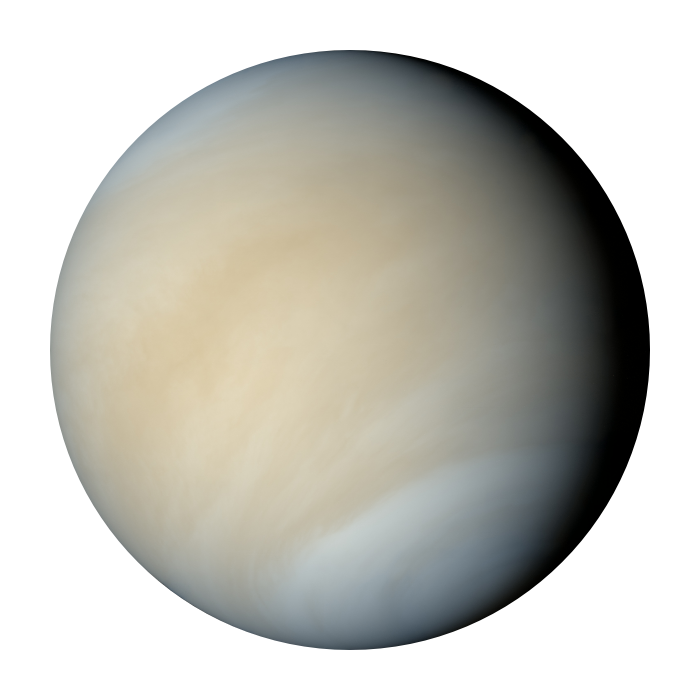

Venus

Top 10 Facts!
- 2nd planet from the sun
- Venus has a diameter of 12,104, which is very close to Earth’s diameter
- One day on Venus is the equivalent of 117 Earth days
- It takes 225 Earth days for Venus to orbit the sun
- Venus is the hottest planet in the Solar System reaching temperatures as high as 471℃
- Venus has a rotation that is opposite to that of every other planet in the Solar System
- At night, Venus is the second brightest object in the sky next to the Moon.
- Earth and Venus are so similar in size and structure that Venus is often called the sister planet of Earth
- Researchers believe that Venus once had oceans, but that they were evaporated as the greenhouse effect increased the temperature of the planet.
- The surface of Venus has many volcanoes and volcanic centers
Three Bonus Facts!
- Rings: Venus dosn't have any rings
- Distance From The Sun: 67.24 million mi
- Namesake: Venus is named after the Roman goddess of love and beauty
Satellite Info
Venus has no natural satellites but researchers have launched multiple successful artificial satellites to Venus. Only one of them remains active currently.
|